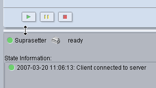
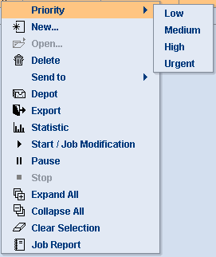

Содержимое динамического окна изменяется в зависимости от контекста работы, который в настоящее время активен. Основным видом динамического окна является дисплей списка.
В общем, вы можете перейти к просмотру деталей, открыв запись в списке. Это дает вам более подробную информацию или вы можете сделать подробные настройки параметров здесь.
Вы можете изменить высоту динамического окна, поместив указатель мыши на разделительную линию между панелью состояния и динамическим окном, а затем переместив эту линию вверх или вниз.

Статусная панель становится меньше по мере увеличения динамического окна.
Вы можете отобразить контекстно-чувствительное меню с помощью правой кнопки мыши, когда вы находитесь в режиме просмотра списка в динамическом окне. Контекстно-чувствительное меню позволяет запускать действия для выбранного элемента в динамическом окне.

Элементы часто отображаются в виде списков в динамическом окне, например, списков заданий или ресурсов, таких как цветные таблицы. Вы можете изменить порядок столбцов в этих списках, нажав заголовок столбца, а затем, с левой кнопкой мыши, удерживаемой вниз, переместив столбец в новое положение.
Вы можете отобразить контекстно-чувствительное меню со списком заголовков столбцов, разместив указатель мыши на заголовке столбца и щелкнув его правой кнопкой мыши. Выберите заголовок, чтобы скрыть колонку, о которой идет речь, или выберите его снова, чтобы показать. Показываемая колонка отмечена тиком перед пунктом меню.
Copyright © 2013 Heidelberger Druckmaschinen AG